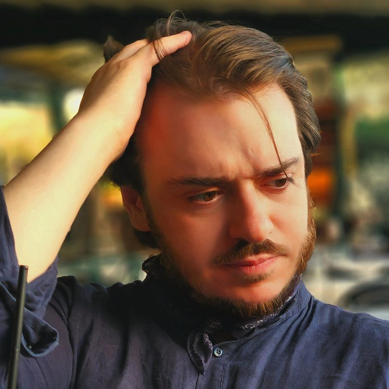

Simon Tardif
Doctoral researcher in philosophy at the École normale supérieure (PSL, Paris) and the Université Laval (Québec).
I work at the junction of the phenomenology of history (Heidegger, Schürmann, Blumenberg), French and German philosophical anthropology and the philosophy of the cognitive sciences (4E cognition, generative passages, etc.). My doctoral research, L’Archéologie du visible, proposes an anthropologization of phenomenological description. Drawing on Blumenberg’s transgression of the Anthropologieverbot, on Sloterdijk’s insightful reading of the phenomenal structures of Sein und Zeit, and on Lambros Malafouris’s material engagement theory in cognitive archaeology, it examines the cognitive presuppositions of Husserl’s and Heidegger’s classical methods, and the historical and material conditions, down to the paleo-archaeological record, under which phenomena come to be described at all.

Research
L’Archéologie du visible : Anthropologisation de la description phénoménologique à l’aune des sciences cognitives
The dissertation examines the historical, material and cognitive foundations of phenomenological description. It looks at the cognitive presuppositions built into the methods of Husserl and Heidegger, and at the cognitive bases of what those methods describe.
The project extends the critical line of German philosophical anthropology (Hans Blumenberg, Peter Sloterdijk) and draws on Lambros Malafouris’s material engagement theory from cognitive archaeology. Its anthropological lens bears on the forms and modes of phenomenological description, and not only on its content.
A second line of research concerns the relation between the naturalization of phenomenology and the “phenomenologization” of the cognitive sciences.
Research areas
- Phenomenology of history (Heidegger, Schürmann, Blumenberg)
- French and German philosophical anthropology
- Philosophy of the cognitive sciences
Further interests
- French historical epistemology (Bachelard, Canguilhem, Foucault)
- Philosophy of mind (4E cognition, mind-body problem)
- History of technologies
- Institutions
- École normale supérieure – PSL (Paris), in cotutelle with the Université Laval (Québec), 2022–2027
- Supervisors
- Christian Sommer (ENS / Archives Husserl de Paris)
Sophie-Jan Arrien (Université Laval) - Affiliations
- UMR 8547 Pays germaniques – Transferts culturels
Laboratoire de philosophie continentale, Université Laval
Member, Société canadienne de philosophie continentale - Epigraph
« Nous pensons en tout cas que le corps, lui, n’a d’autres lois que celle de sa physiologie et qu’il échappe à l’histoire. Erreur à nouveau ; il est pris dans une série de régimes qui le façonnent ; il est rompu à des rythmes de travail, de repos et de fêtes ; il est intoxiqué par des poisons — nourritures ou valeurs, habitudes alimentaires et lois morales tout ensemble ; il se bâtit des résistances. »
Michel Foucault, « Nietzsche, la généalogie, l’histoire », in Dits et écrits, t. I : 1954–1975, Paris, Gallimard, 2001, p. 1015.
Publications
Forthcoming accepted manuscripts
- 2027Les marqueurs paléo-archéologiques de la temporalité du DaseinPhilosophiques, vol. 54.
- 2027From Phenomenology to Fiction with Hans BlumenbergIn Hans Blumenberg: fenomenología y antropología, Guillermo Escolar Editor, coll. Fenomenología y metafísica.
- 2027Le passage de la phénoménologie à la fiction chez Hans BlumenbergAnnales de phénoménologie.
- 2027Les phénomènes sortent-ils du sol ? Les conditions matérielles du discours phénoménologiqueIn Phénoménologie de l’expression. À travers et par-delà le langage, Paris, Vrin.
Published
- 2025La théorie des systèmes dynamiques en tant que cogito d’appareil : La connaissance du biologique de Georges Canguilhem à René ThomPhares, vol. 25, p. 151–173.
- 2022Le privilège ontologique d’un étant parmi d’autres : Martin Heidegger, l’existence et le vivantIthaque, vol. 30, p. 39–62.
- 2019Dans le propylée du Temple avec Heidegger : Penser la communauté à l’époque modernePensées canadiennes, vol. 17, p. 41–60.
Under review
- —Corporalité et histoire chez Martin Heidegger : Le cas d’une nouvelle réduction phénoménologiqueSubmitted to Heidegger Studies.
- —Gaston Bachelard, phénoménologue et anthropologue à son insuSubmitted to Phänomenologische Forschungen.
Work in progress
- —A Foucauldian reading of the phenomenologization of cognitive sciences
Essays, reviews and interviews written for Le Délit, the French-language student newspaper of McGill University, where I served as philosophy editor (2017–2019).
- 2026Special issue on philosophical anthropologyCo-edited with Sophie-Jan Arrien and Anton Ajazi, Philosophiques.In preparation
- 2024–25Varia editorPhares. Revue de philosophie, Université Laval.
- 2017–19Philosophy editorLe Délit, McGill University.
Talks
- 22–24 Oct 2026Gaston Bachelard, phénoménologue et anthropologue à son insuAnnual Congress of the Canadian Society for Continental PhilosophyMontréal, Canada
- 21–24 Jul 2026La question de la technique et l’idée d’une corrélation entre phénomènes et matérialité dans la post-phénoménologie de Don IhdeÉcole d’été Marc Richir, 9e éditionDixmont, France
- 14 Jul 2026What does it mean to “phenomenologize” cognitive sciences?Dienstagskolloquium: Phänomenologie und Psychiatrie, Universität HeidelbergHeidelberg, Germany
- 2 Jul 2026Les phénomènes sortent-ils du sol ? La corrélation entre type matériel et clôture phénoménaleColloque « L’expression et ses phénomènes », École normale supérieureParis, France
- 24 Jun 2026Was Dasein extended or scaffolded all along?Copenhagen Summer School in Phenomenology and Philosophy of Mind, University of CopenhagenCopenhagen, Denmark
- 16 Jun 2026Y a-t-il un « Dasein » dans la grotte ? Description phénoménologique, variation matérielle et dialectique générativeColloque international sur l’anthropologie philosophique, École normale supérieureParis, France
- 18 Apr 2026From Phenomenology to Fiction with Hans BlumenbergJornadas « Hans Blumenberg: fenomenología y antropología », Universitat de les Illes BalearsPalma, Spain
- 7 Apr 2026Faire l’épreuve de l’être. Le retour au corps chez HeideggerCauserie du Laboratoire de philosophie continentale, Université LavalQuébec, Canada
- 11 Jun 2025« Le temps se temporalise seulement du fait que l’homme est » : Les marqueurs paléo-archéologiques de la temporalité du DaseinJournées d’étude du groupe de travail interdisciplinaire des Archives Husserl de Paris et du Laboratoire de philosophie continentaleQuébec, Canada
- 4 Jun 2025L’élaboration d’une « ontologie de la Nature » chez Maurice Merleau-Ponty et Roger Chambon« Autour du concept de nature : de la phénoménologie à l’anthropologie », Congrès de la Société de philosophie du QuébecQuébec, Canada
- 9 Apr 2025Qu’appelle-t-on « phénoménologisation » ? Quelques remarques sur les effets discursifs de la phénoménologie et la possibilité de sciences cognitives heideggériennesSéminaire doctoral en anthropologie philosophique, ENSParis, France
- 3 Apr 2025Anthropologisation ou naturalisation ? Hans Blumenberg, les sciences cognitives et la transformation de la phénoménologieJournée doctorale de l’École normale supérieureParis, France
- 22 Mar 2024L’ancrage historique et matériel des structures phénoménales : remarques sur l’être-au-monde de HeideggerJournée de la recherche de l’ACEP, Université LavalQuébec, Canada
- 26 Jun 2023Vers une archéologie du Dasein : remarques sur une phénoménologie anthropologisée à la lumière de l’archéologie cognitiveRencontres doctorales UMR 8547 – Pays germaniquesParis, France
- 26 Feb 2022Que veut dire parler de l’existence en psychiatrie ? De la Daseinsanalyse à la psychiatrie énactivePhilopolisMontréal, Canada
- 27 Feb 2021Pourquoi lisons-nous des œuvres du passé ? Heidegger et la tâche de la philosophiePhilopolisMontréal, Canada
- 15 Feb 2020Phénoménologie de la pathologie : Heidegger et le problème du corps dans les Zollikoner Seminare (GA 89)PhilopolisMontréal, Canada
Education & experience
Degrees
- 2022–2027
- Doctorat en philosophie (cotutelle)École normale supérieure – PSL & Université Laval
- 2020–2022
- Maîtrise en philosophieUniversité du Québec à Montréal (UQAM)
- 2016–2019
- Bachelor of Arts, Honours Philosophy, minor concentration in Classical StudiesMcGill University
- 2014–2016
- Diplôme d’études collégiales (Histoire et civilisation)Collège de Bois-de-Boulogne
Research stay
- July 2026
- Visiting researcher (4 weeks)Section for Phenomenological Psychopathology and Psychotherapy, directed by Thomas Fuchs, Universität Heidelberg
Fellowships & grants
- 2025–2027
- SSHRC Insight Development GrantContributor · CAD 67,600
- 2024–2026
- Bourse Citoyennes et citoyens du monde – Volet mobilitéFondation Famille Choquette · CAD 25,000
- 2024
- SSHRC Doctoral Comprehensive Exam Preparation AwardFaculté des études supérieures et postdoctorales, Université Laval · CAD 3,000
- 2023–2027
- SSHRC Doctoral FellowshipSocial Sciences and Humanities Research Council of Canada · CAD 120,000
- 2022–2023
- Bourse doctorale Thomas-De KoninckFaculté de philosophie, Université Laval · CAD 15,000
- 2021
- Canada Graduate Scholarship – Master’s (Joseph-Armand Bombardier)SSHRC · CAD 17,500
Research & teaching
- 2026
- Co-taught graduate seminar on phenomenology and the cognitive sciencesWith Prof. Sophie-Jan Arrien, Université Laval: PHI-7706 Sujets spéciaux : Phénoménologie et sciences cognitives (Winter 2026)
- 2024–2026
- Research assistant to Prof. Sophie-Jan ArrienAnnotated bibliographies; syllabi and reading programmes for graduate seminars on phenomenology and philosophical anthropology, and on phenomenology and the cognitive sciences; co-wrote a SSHRC Insight Development Grant application. Université Laval
- 2024
- Teaching assistant to Prof. Sophie-Jan ArrienHeidegger (PHI-2132): weekly 90-minute workshops, grading. Université Laval
- 2021–2022
- Research assistant to Prof. Denis FisetteAnnotated bibliographies; archival research on the Philosophische Gesellschaft an der Universität zu Wien (1888–1938). UQAM
- 2020–2021
- CÉGEP teaching of philosophy and internshipsThree special seminars and two teaching internships, Collège de Bois-de-Boulogne and Collège Jean-de-Brébeuf
Academic service
- 2027
- Organizer, research workshopJournées d’étude sur Schürmann, Québec, June 2027
- 2026–2027
- Student representative, Faculty CouncilFaculté de philosophie, Université Laval
- 2025–2027
- Organizer, international conference seriesHistoire et pratiques de l’anthropologie philosophique I, II and III (Québec 2025, Paris 2026, Québec 2027), bringing together the research working group of the Laboratoire de philosophie continentale (Québec) and the Archives Husserl (Paris)
- 2024–2025
- General coordinator, ACEPAssociation des chercheur(e)s étudiant(e)s en philosophie, Université Laval
- 2024–2025
- Organizer, three reading circlesLaboratoire de philosophie continentale: a phenomenological rereading of Husserl’s Kaizo articles; a phenomenological-anthropological reading of Blumenberg’s Beschreibung des Menschen (2006); key texts on the naturalization of phenomenology
- 2024
- Organizer, research workshopJournée de la recherche de l’Association des chercheur(e)s étudiant(e)s en philosophie (ACEP), Université Laval, March 2024
- 2022–2023
- Doctoral representative and organizer of the research workshopUMR 8547 Pays germaniques, ENS
Contact
For invitations, collaborations or offprints, write to me at:
simon.tardif-loiselle@ens.psl.eu